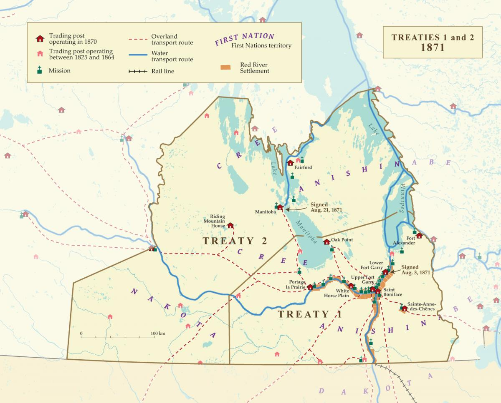
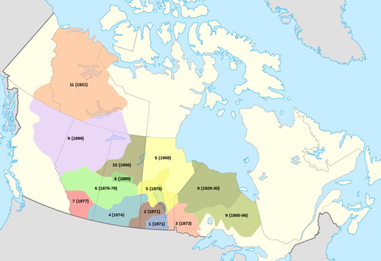

Clash of Perspectives
Who Was at the Table?
On July 25, 1871, thousands of Indigenous people gathered at Lower Fort Garry. The primary groups involved were the Anishinaabe (Ojibwe) and the Ininiwak (Swampy Cree) Nations. They met with representatives of the Crown, led by Lt. Gov. Adams G. Archibald and Comm. Wemyss M. Simpson.
The Crown arrived with a rigid mandate: open the land for mass settlement. The First Nations arrived with a vastly different objective: a nation-to-nation peace and sharing agreement.
8-Day Stalemate
The negotiations did not go smoothly. For the first several days, First Nations leaders completely rejected the Crown's terms because the amount of reserve land offered was dangerously small. It took eight full days of intense, frustrating debate before an agreement was finally reached.
Key Figures
- Chief Mis-koo-kenew (Red Eagle): Represented the Roseau River people and strongly advocated for adequate land reserves.
- Adams G. Archibald: Lieutenant Governor of Manitoba, eager to expedite the process.
- Wemyss M. Simpson: Indian Commissioner tasked with securing the signatures.
"Outside Promises"
The Disconnect
A massive point of friction occurred because the Crown's negotiators made several verbal commitments to secure the signatures of First Nations leaders, who relied heavily on oral tradition. These promises included farm equipment, animals, clothing, and schools to help the communities transition their economies.
The Aftermath
When the formal written document was finalized on August 3, 1871, these verbal commitments were completely missing from the text. This led to immediate protests from Indigenous leaders. It wasn't until 1875 that the Canadian government formally acknowledged and added these promises to the treaty.
Mapping the Territory
Treaty 1 Boundaries
The specific boundaries of Treaty 1 cover much of southern Manitoba, including modern-day Winnipeg, Brandon, Portage la Prairie, and Selkirk.

When negotiated in 1871, the Crown sought this specific land first because it was the most fertile agricultural region and the gateway to western expansion.
Regional Context
To understand the scale of Treaty 1, you have to look at it within the context of the larger Numbered Treaties across Canada.

While Treaty 1 holds immense historical significance as the first post-Confederation treaty, it covers a relatively small geographic area compared to the massive northern territories covered by Treaties 5, 9, and 11.